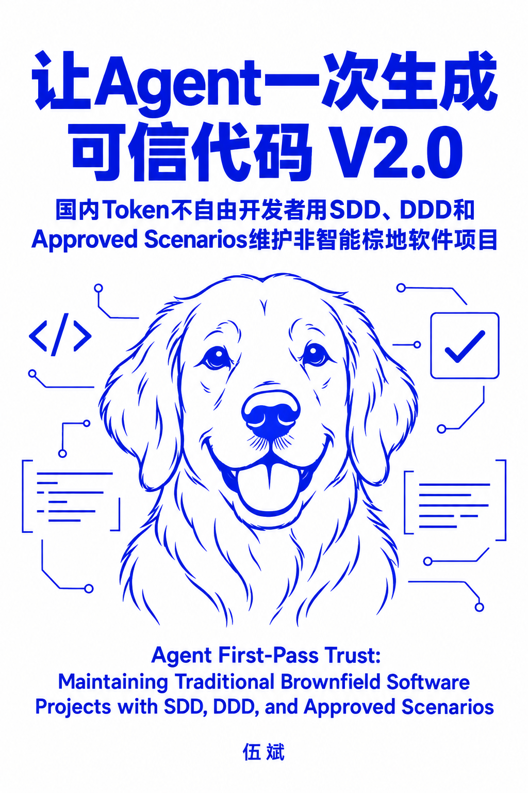

代码能跑，为何还不可信？
让 Agent 一次生成可信代码 V2.0 · 两类用途，两条验证路径

01 / Vibe Coding（用完即抛）
需求理解偏了
代码能跑 ≠ 做对了事
先把“你以为我要的”变成“我确认要的”。
假设体检 → 持续追问 → 确认目标
用于修复 AI 脑补偏差，澄清真实诉求。
用于修复 AI 脑补偏差，澄清真实诉求。
02 / Brownfield Software（长期维护）
改得动，也验得住
代码与测试，都要能核验
同样先对齐诉求，再建立持续维护的依据。
理解 → 设计 → 构建 → 评测
调试与可视化 / 验收场景 / Approved Scenarios / 故障注入
调试与可视化 / 验收场景 / Approved Scenarios / 故障注入
两类代码都可能不可信。提示词对齐需求，验证结果仍需检查。
接下来六张：聚焦Brownfield Software（长期维护）的信任依据。
接下来六张：聚焦Brownfield Software（长期维护）的信任依据。